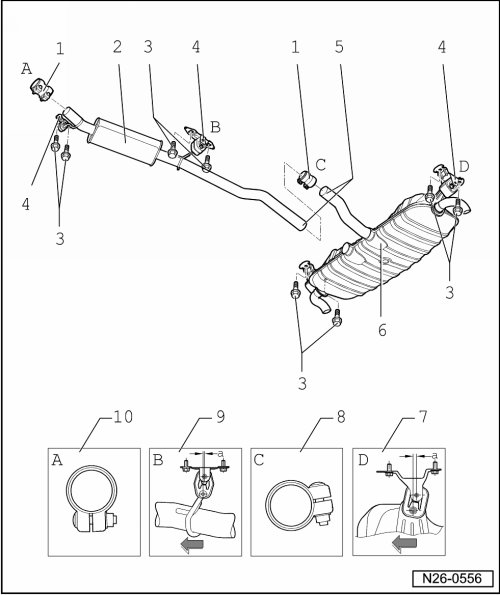
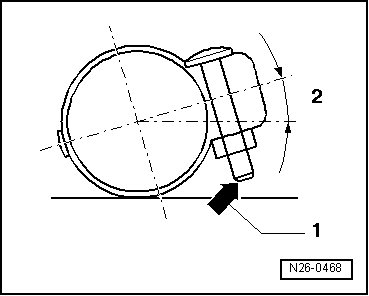
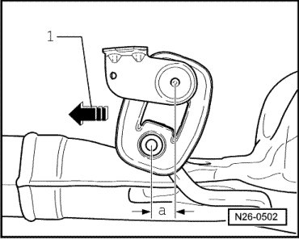

Muffler: Locations
Muffler with Mounts, Assembly Overview

1 Double clamp, 40 Nm
2 Center muffler
3 Mounting bolt, 25 Nm
4 Suspended mount
• Installed location --> [ Installation Position of Double Clamps in Direction of Travel ]
5 Separating point
• For repairs
• Identified on exhaust pipe by an impression
• As standard, center and rear mufflers are installed as a single component. For cases of repair, the middle and rear mufflers are supplied individually and with a double clamp for connecting.
• Cut through connecting pipe at right angles at the separating point using body repair saw (V.A.G 1523A).
• Notches left and right of separating point must still be visible after installing double clamps
6 Rear muffler
• Installing muffler free of tension
7 Suspended mount
• Installed location --> [ Aligning Exhaust System ]
• Replace if damaged
8 Double clamp
• Installed location --> [ Installation Position of Double Clamps in Direction of Travel ]
• Must be slid to its center onto front exhaust pipe.
9 Suspended mount
• Installed location --> [ Aligning Exhaust System ]
• Replace if damaged
10 Double clamp
• Must be slid to its center onto front exhaust pipe.
Installation Position of Double Clamps in Direction of Travel

1 The end of the bolt must not project beyond lower edge of clamp.
2 Angle 10° + 5°
Aligning Exhaust System

Conditions
• Exhaust system, cold
Procedure
- Press exhaust system in direction of travel - 1 - and tighten double clamps tightly until dimension - a - at suspensions is reached.
Center muffler: dimension - a - = 10 mm
Rear muffler dimension - a - = 15 mm